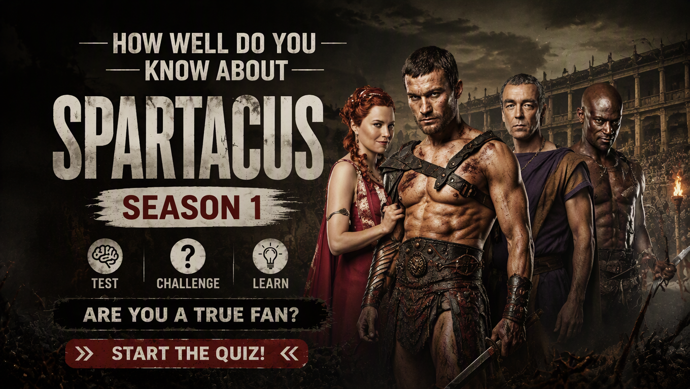

SPARTACUS • TV SERIES • SEASON 1 TRIVIA
Spartacus Season 1 Quiz
Think you know Spartacus: Blood and Sand? Test your knowledge of Spartacus, Crixus, Batiatus, Lucretia, the gladiators of Capua, the House of Batiatus and the bloody battles that shaped Season 1.
Every question has one correct answer. Choose carefully and see how well you remember the characters, rivalries, betrayals, arena battles and major events of Season 1.
This quiz contains major story details and spoilers from Spartacus: Blood and Sand Season 1.


ABOUT THE QUIZ
The Spartacus Season 1 Quiz is a 30-question trivia challenge for fans of Spartacus: Blood and Sand. It explores the brutal world of Roman gladiators, where survival depends on skill, loyalty, ambition and the ability to outwit powerful enemies.
The questions cover Spartacus, Crixus, Oenomaus, Ashur, Varro, Batiatus, Lucretia, Ilithyia, Naevia and other important characters.
The quiz also tests your memory of the House of Batiatus, the gladiator school in Capua, legendary arena opponents, secret relationships, betrayals and the events that lead to the Season 1 finale.
Spartacus Season 1 Details
Series: Spartacus: Blood and Sand
Season: 1
Episodes: 13
Genre: Historical drama, action and adventure
Central Conflict: A Thracian warrior is betrayed by Rome and forced into slavery, where he must fight for survival while seeking justice and revenge.
Major Storylines: Spartacus's transformation into a gladiator, his rivalry and alliance with Crixus, the ambitions of Batiatus and Lucretia, the secrets of the ludus and the growing tensions that lead toward rebellion.
WHAT THIS QUIZ COVERS
The questions cover characters, gladiator titles, Roman terminology, relationships, rivalries, betrayals and memorable events from Season 1.
Spartacus and the Gladiators
Test your knowledge of Spartacus, Crixus, Oenomaus, Varro and the other fighters at the ludus as they struggle for status, survival and freedom.
The House of Batiatus
Remember Quintus Batiatus, Lucretia and the schemes that shape life inside their household. Ambition, wealth and political influence are just as dangerous as the fights in the arena.
Rivalries and Secret Relationships
Questions explore the relationships between Crixus and Naevia, Spartacus and Sura, and the secrets that other characters attempt to expose or exploit.
Legendary Arena Battles
Recall the Shadow of Death, the Beast of Carthage, the Champion of Capua and the battles that establish Spartacus's reputation among the gladiators and spectators.
Betrayals and the Season Finale
The quiz covers important betrayals, the fates of key characters and the events leading to the dramatic conclusion of Season 1.
HOW THE QUIZ WORKS
The quiz contains 30 questions. Every question has four possible choices, but only one answer is correct. Read each question carefully and select the answer you believe is correct.
Each correct answer gives you 1 point, while an incorrect answer gives you 0 points. Your final score is converted into a percentage out of 100%.
Your result represents how well you remember the characters, gladiators, rivalries and events of Spartacus: Blood and Sand Season 1.
Quiz Navigation
Starting the Quiz
Select START QUIZ on the opening screen to begin. The first question will appear with four possible answers.
Selecting an Answer
Read all four choices before making your decision. Select the answer you believe is correct. The quiz automatically moves to the next question shortly after you select an answer.
Next and Back Buttons
Use Next to move forward and Back to revisit an earlier question. Your previous answer remains selected when you return to a question.
Finishing the Quiz
Answer all 30 questions to complete the quiz. Submit your answers on the final question to see your score, accuracy and knowledge level.
Try Again and Challenge Friends
Select TRY AGAIN to replay the quiz. You can also share your result or challenge friends to see who remembers more details from Season 1.
FAQ
How many questions are in the quiz?
There are 30 questions in total, and every question has four possible choices.
What is the maximum score?
The maximum result is 100%. Each correct answer contributes one point before the score is converted into a percentage.
What topics are covered?
The quiz focuses on Spartacus: Blood and Sand Season 1, including Spartacus, Crixus, Batiatus, Lucretia, the gladiators of Capua and major plot developments.
Can I take the quiz again?
Yes. Select TRY AGAIN after completing the quiz to start another attempt and improve your score.
Can I challenge my friends?
Yes. Select CHALLENGE YOUR FRIENDS after completing the quiz to share the challenge.
Spoiler Warning
This quiz contains spoilers for Spartacus: Blood and Sand Season 1. Questions may reveal character relationships, deaths, betrayals, arena battles and major developments from the season.
If you have not watched Season 1, consider watching it before taking the quiz to avoid having important story details spoiled.